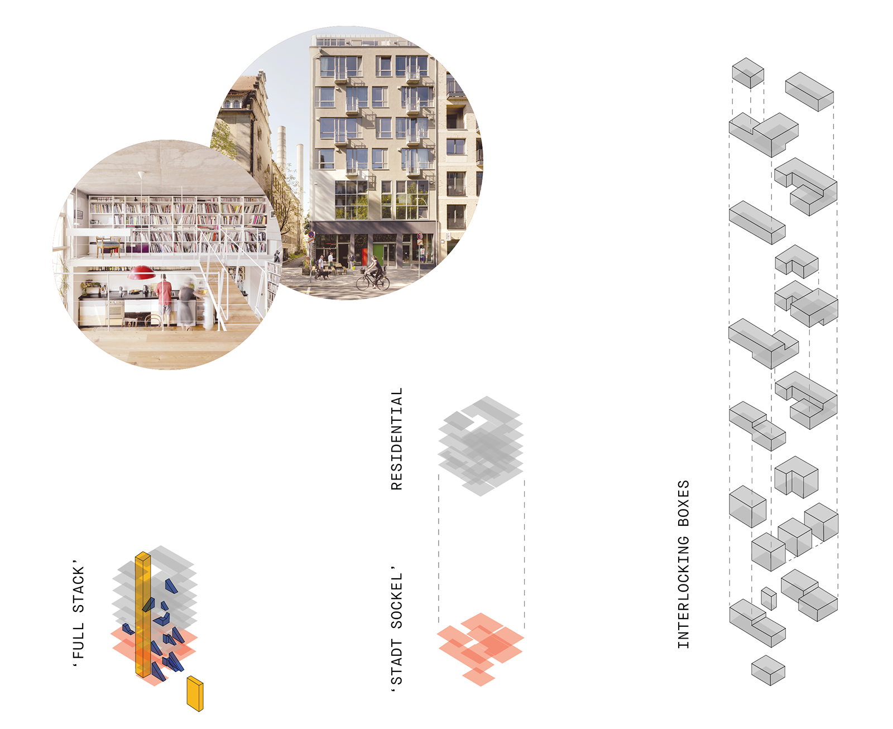

A baugruppe for Oberschöneweide
Completed under Bruno Röver (Studio instructor, Northeastern University SOA in Berlin) at Northeastern University for Housing Abroad: Berlin. Project completed in partnership with Alya Abourezk.
Baugruppe translated from German to English literally means "building group" and is a model of housing that falls somewhere between communal housing and a condominium association. The end product depends on the group that comes together to build a baugruppe: financing, social make-up, quality of living, and ultimately, the resulting architectural and urban qualities of the structure, are all up to the residents. This studio, which took place in Berlin, Germany, focused on providing a baugruppe sited in a rapidly-gentrifying old industrial area of East Berlin called Oberschöneweide.
Tasked with placing a public amenity of a cinema in a residential neighborhood populated families and bordered by an old folks' home, my partner and I found inspiration in the urban tension of the piazza and alley typology in Venice, Italy. We saw an opportunity to preserve an informal pedestrial path that we noticed was used frequently.
Using BAR Arkitekten's Oderberge Straße as a precedent for efficiency and interlocking building units, we set out to create a diverse building block. Vertical circulation holds together the apartment units, and dwelling spaces are stacked on top of the "stadt sockel," or city base.